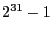

Next: BestBdStop Up: Parameter Descriptions Previous: BarQCPConvTol
| Type: | int | |
|---|---|---|
| Default value: | 1000 | |
| Minimum value: | 0 | |
| Maximum value: | MAXINT |
Limits the number of barrier iterations performed. This parameter is rarely used. If you would like barrier to terminate early, it is almost always better to use the BarConvTol parameter instead.
Optimization returns with an ITERATION_LIMIT status if the
limit is exceeded (see the Status Code
section for further details).
One important note about integer-valued parameters: while the maximum value that can be stored in a signed integer is , we use a MAXINT value of 2,000,000,000. Attempting to set an integer parameter to a value larger than this maximum will produce an error.
Note: Barrier only
For examples of how to query or modify parameter values from our different APIs, refer to our Parameter Examples.